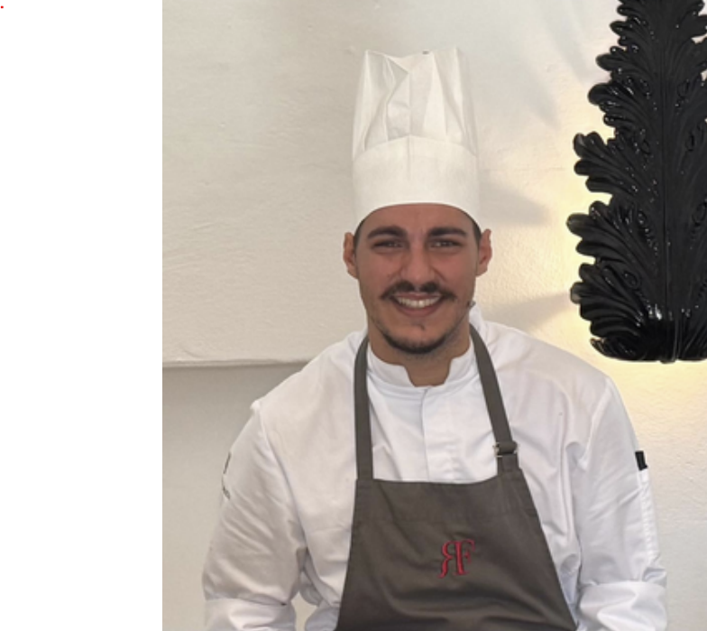

Demi Chef de Partie
8+ years crafting Mediterranean excellence
across 5-star hotels & gourmet restaurants

Demi Chef de Partie with over 8 years of experience in gourmet restaurants and 5-star hotels. I specialise in Mediterranean and traditional Italian cuisine, with excellent skills in managing the food, coordinating the team, and adhering to HACCP standards.
Great attention to detail, rapid execution, and a lasting passion for culinary innovation drive everything I do — from the first mise en place to the final plating.
Deep-rooted knowledge of traditional techniques and regional flavours, from handmade pasta to classical sauces.
Precise coordination of multi-station service, ensuring every dish leaves the pass at the right moment.
In-depth understanding of food safety standards, traceability, and hygiene protocols required by fine-dining establishments.
Proven ability to maintain quality and composure during high-volume service in demanding environments.
Strong capacity to guide junior staff, distribute tasks effectively, and maintain high team morale.
Experienced cooking class host with strong communication skills, representing the kitchen in front of hotel guests.
Looking for a passionate, detail-driven chef? I'd love to hear from you.